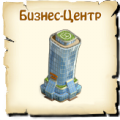

Получено: файл; исходный URL. Исходный файл без перекодирования; авторство не установлено. Страница: источник.
Бизнес-Центр
браузерная версия; платформа и дата редакции не установлены- Тип
- Постройка
- Версия и дата
- браузерная версия; платформа и дата редакции не установлены
Данные по источнику · браузерная версия; платформа не определена · дата редакции не установлена
Предварительно: Автоматическое чтение цифровых пиктограмм и их подписей; знак ? означает нераспознанное количество, подписи могут содержать ошибки источника. Требуется ручная сверка каждой стадии.. Требуется сверка.
- Исходные подписи и цифры в первой колонке
- [Бизнес-Центр] | [Доступен на 28-м уровне] | или открыть | за | 28 | [Зомбаксы] | [Стоимость постройки] | 500000 | [Опыт за каждый этап строительства] | 5000 | 300 | 450 | 550 | 700 | 1000 | [Суммарный опыт] | 8000
- Стадии по пиктограммам
- Стадия 1: 10 × Белая Краска + 50 × Проволока + 10 × Стекло Стадия 2: 50 × Блоки + 30 × Цемент + 30 × Доска Стадия 3: 50 × Металл + 10 × Железное сердце + 50 × Стекло Стадия 4: 30 × Мрамор + 10 × Синее сердце + 30 × Белая Краска Стадия 5: 30 × Зеленая краска + 20 × Черное сердце + 50 × Стекло
Данные по источнику · Мой Мир (Mail.ru), историческая таблица · дата редакции не установлена
Предварительно: Таблица источника; обозначения валют/уровней могут быть пиктограммами и в тексте отсутствовать. Сопоставление названий пристаней и флага Беларуси выполнено по названию и требует сверки.. Требуется сверка.
- Название и первая колонка источника
- Бизнес-Центр 500000 28 ур. или 28
- Опыт, стадии, производство и модернизация
- Опыт: 8000 = 5000+300+450+550+700+1000 Стадии строительства: 10 Белая краска + 50 Проволока + 10 Стекло 50 Блоки + 30 Цемент + 30 Доска 50 Металл + 10 Железное сердце + 50 Стекло 30 Мрамор + 10 Синее сердце + 30 Белая краска 30 Зелёная краска + 20 Чёрное сердце + 50 Стекло Создает: 1 Брус секвойи = 5 Доска + 1 Супер-клей 100000 Монет = 100 Алые розы + 50 Лилия 60000 Монет = 100 Мак + 50 Бамбук 100000 Монет = 150 Семечки + 50 Гипносолнух


Данные по источнику · браузерная версия; платформа не установлена · дата редакции списка не установлена
Предварительно: Прочитан список. Имена файлов пиктограмм приводятся как есть: они не гарантируют идентификацию материала. Alt-атрибуты источника содержат ошибки. Отдельная статья и дата не проверены.. Требуется сверка.
- Сведения из списка, включая имена файлов пиктограмм
- [рисунок: Biznes-centr.png] Доступен на: 28 уровне Стоимость: 500 000 монет Даёт опыта: 8000 (5000+300 +450+550 +700+1000) Стадии строительства: 1. 10 [рисунок: Belaya_kraska.png] + 50 [рисунок: Provoloka.png] + 10 [рисунок: steklo.png] 2. 50 [рисунок: Bloki.png] + 30 [рисунок: Cement.png] + 30 [рисунок: Doska.png] 3. 50 [рисунок: Metall.png] + 10 [рисунок: Geleznoye_serdce.png] + 50 [рисунок: steklo.png] 4. 30 [рисунок: Mramor.png] + 10 [рисунок: Sinee_serdce.png] + 30 [рисунок: Belaya_kraska.png] 5. 30 [рисунок: Zelenaya_kraska.png] + 20 [рисунок: Chernoe_serdce.png] + 50 [рисунок: steklo.png] Производит: 1. 01 [рисунок: Rezina.png] = 001 [рисунок: Super-kley.png] + 01 [рисунок: Ogon.jpg] 2. 01 [рисунок: Brus_sekvoyi.png] = 005 [рисунок: Doska.png] + 01 [рисунок: Super-kley.png] 3. 100 мака + 50 бамбука = 60 000 монет 4. 150 семечек + 50 гипносолнухов = 100 000 монет 5. 100 алых роз + 50 лилий = 100 000 монет
Данные по источнику · браузерная игра; платформа страницы не уточнена · 11.01.2014 — публикация; редакция неизвестна
Предварительно: Прочитана конкретная строка; старые сведения, у источника встречаются опечатки. Независимость от других сайтов не доказана.. Требуется сверка.
- Стадии по Zommbie
- 1: 10 белой краски + 50 проволоки + 10 стекла; 2: 50 блоков + 30 цемента + 30 досок; 3: 50 металла + 10 железных сердец + 50 стекла; 4: 30 зелёного мрамора + 10 синих сердец + 30 белой краски; 5: 30 зелёной краски + 20 чёрных сердец + 50 стекла.
- Возможности и рецепты по Zommbie
- Резина = 1 супер-клей + 1 огонь; брус секвойи = 5 досок + 1 супер-клей; 60 000 монет = 100 мака + 50 бамбука; 100 000 монет = 150 семечек + 50 гипносолнухов; 100 000 монет = 100 алых роз + 50 лилий.
Данные по источнику · браузерная социальная версия; сеть не указана · дата публикации не подтверждена
Предварительно: Исторический фанатский источник. Возможна зависимость от других сайтов; дата редакции может отличаться от даты публикации.. Требуется сверка.
- Условия
- Уровень 28; цена 500 000 монет; 8000 опыта.
- Стадии по пиктограммам
- 1: 10 белой краски, 50 проволоки, 10 стекла; 2: 50 блоков, 30 цемента, 30 досок; 3: 50 металла, 10 железных сердец, 50 стекла; 4: 30 мрамора, 10 синих сердец, 30 белой краски; 5: 30 зелёной краски, 20 чёрных сердец, 50 стекла. Имена определены по файлам, визуально не сверены.
- Рецепты по пиктограммам
- 1 резина = 1 суперклей + 1 огонь; 1 брус секвойи = 5 досок + 1 суперклей; названия по файлам.
- Рецепты, подписанные текстом
- 100 мака + 50 бамбука = 60 000 монет; 150 семечек + 50 гипносолнухов = 100 000 монет; 100 алых роз + 50 лилий = 100 000 монет.
Данные по источнику · историческая браузерная игра, площадка не указана · 05.05.2012 — дата публикации; дата редакции неизвестна
Предварительно: Сопоставлено по единственному точному названию; различные версии или одноимённые объекты могут различаться. Названия файлов и alt пиктограмм сохранены как подписи, не заменяют проверенную расшифровку; изображения и цены требуют ручной сверки. Независимость от zombi-ferma.ru и других сайтов не установлена.. Требуется сверка.
- Текст и пиктограммы источника
- [изображение: m_business.png] Доступен на: 28 уровне Стоимость: 500 000 монет Даёт опыта: 8000 (5000+300+450+550+700+1000) 1 стадия: 10 Белая краска + 50 Проволока + 10 Стекло; опыт: 300 2 стадия: 50 Блоки + 30 Цемент + 30 Доска; опыт: 450 3 стадия: 50 Металл + 10 Железное сердце + 50 Стекло; опыт: 550 4 стадия: 30 Мрамор + 10 Синее сердце + 30 Белая краска; опыт: 700 5 стадия: 30 Зелёная краска + 20 Чёрное сердце + 50 Стекло; опыт: 1000
Связанные сущности
нет проверенных связей — требуется сверка.
Источники
- Каталог построек: строка и пиктограммы; дата неизвестна
- Zombiemail: таблица построек, часть 2; версия Мой Мир
- ZOMBIA: прочитана карточка в каталоге
- Адрес отдельной карточки, отдельный доступ не проверен
- Zommbie.at.ua: раздел построек, запись 2014 года
- Прочитанная отдельная страница
- ZF.3dn: историческая карточка постройки